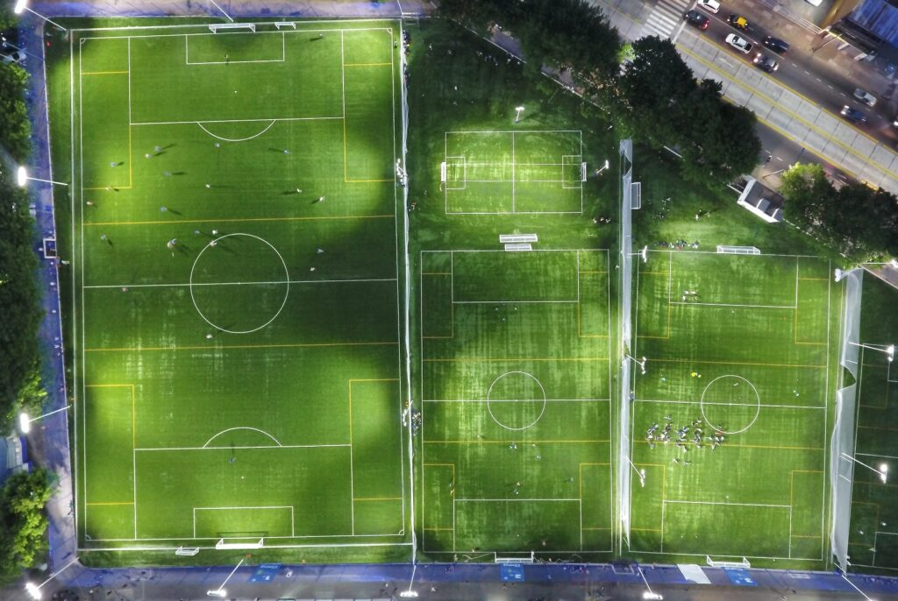
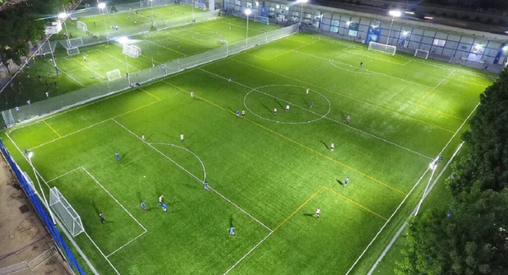
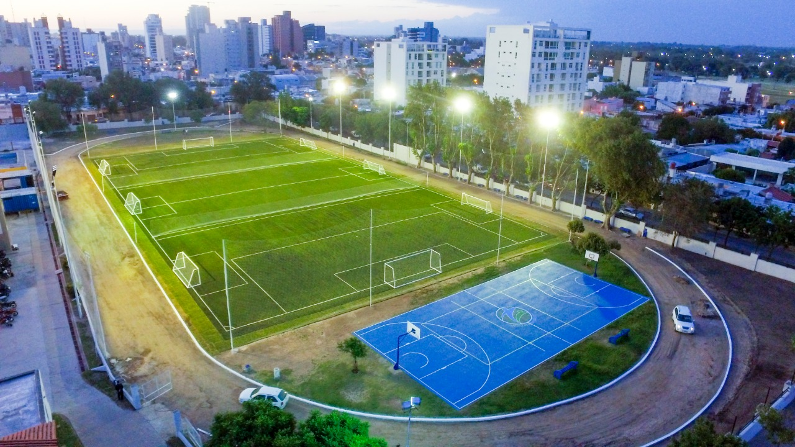

Imagenes de sedes
Sede de Quilmes

Bienvenidos a la cancha de fútbol 11 en Quilmes, un espacio vibrante donde la pasión por el fútbol cobra vida. Ubicada en el corazón de esta ciudad histórica, nuestra cancha ofrece un entorno único para disfrutar del deporte rey. Aquí tienes una descripción detallada:
- Nombre de la Cancha: Juventus
- Ubicación: Quilmes
Ubicacion exacta
Características de la Cancha
-
Dimensiones Oficiales: La cancha sigue las dimensiones oficiales reglamentarias para un partido de fútbol 11, proporcionando un espacio amplio y emocionante para que los jugadores muestren sus habilidades.
-
Césped Impecable: El césped, cuidadosamente mantenido, ofrece una superficie de juego uniforme y de alta calidad. La textura suave y la consiste.
Arriba
Sede de Sarandi

¡Bienvenidos a la apasionante cancha de fútbol 11 en Sarandí, donde la emoción y la destreza se encuentran en cada rincón! Aquí tienes una descripción detallada de este espacio deportivo:
-
Nombre de la cancha: Loretto
-
Ubicacion: Sarandí
Ubicacion exacta
Características de la Cancha
-
Ambiente Electrizante: Desde el momento en que pones un pie en la cancha, te envuelve un ambiente vibrante. El espíritu competitivo y la energía contagiosa crean un entorno perfecto para disfrutar del fútbol en su máxima expresión.
-
Dimensiones Estándar: La cancha sigue las dimensiones reglamentarias para un juego de fútbol 11, brindando un campo de juego espacioso que permite el desarrollo de estrategias y tácticas elaboradas.
-
Césped de Primera Calidad: El césped, cuidadosamente cuidado, ofrece una superficie uniforme y firme. La textura suave bajo tus pies garantiza un juego fluido y ágil, ideal para expresar la destreza técnica de los jugadores.
-
Instalaciones Modernas: La cancha cuenta con instalaciones modernas que incluyen iluminación de alta calidad, lo que permite fiestas emocionantes incluso en horarios nocturnos.
-
Graderías para Aficionados: Para aquellos que disfrutan del fútbol desde las graduadas, contamos con áreas destinadas para los espectadores. Desde aquí, podrás vivir cada emoción y celebrar los momentos destacados junto con otros apasionados del fútbol.
-
Accesibilidad: La cancha está convenientemente ubicada, con fácil acceso para equipos, árbitros y espectadores. Creemos en la inclusividad y en proporcionar una experiencia cómoda para todos los involucrados.
-
Ambiente Comunitario: La cancha no es solo un lugar para jugar al fútbol, sino también un punto de encuentro para la comunidad futbolera de Sarandí. Aquí, la pasión por el deporte se une con la conexión comunitaria.
¡Prepárate para vivir momentos inolvidables en nuestra cancha de fútbol 11 en Sarandí! ¡Te esperamos para disfrutar juntos del deporte más apasionante del mundo!
Arriba
Sede de Avellaneda

¡Bienvenidos a la cancha de fútbol 11 en Avellaneda, un escenario donde la pasión y la magia del fútbol convergen para crear una experiencia única! Aquí te presento una perspectiva diferente:
- Nombre de la Cancha: Arsenal
- Ubicacion: Avellaneda
Ubicacion exacta
Características que la Hacen Única
- Arquitectura Pionera: La cancha de Avellaneda destaca por su diseño arquitectónico innovador. Con modernas estructuras y una disposición que maximiza la visibilidad, cada rincón está pensado para que tanto jugadores como espectadores vivan una experiencia excepcional.
- Mural de Historia: En sus muros, la cancha de Avellaneda cuenta la rica historia futbolística de la región. Un mural artístico que rinde homenaje a los íconos del fútbol local, creando un ambiente que celebra la conexión entre el pasado y el presente.
- Áreas de Esparcimiento: Además del campo de juego, la cancha cuenta con áreas de esparcimiento que van más allá de lo convencional. Espacios verdes, zonas de picnic y murales interactivos ofrecen a los visitantes una experiencia completa, más allá de los 90 minutos de juego.
- Inclusividad Total: La cancha de Avellaneda se enorgullece de su enfoque inclusivo. Con accesibilidad para personas con movilidad reducida, instalaciones para todos los géneros y una política de bienvenida, se esfuerza por ser un lugar donde todos se sientan parte de la celebración futbolística.
- Eventos Culturales: Más que solo fútbol, esta cancha se convierte en un epicentro cultural. Desde eventos artísticos hasta proyecciones de películas relacionadas con el fútbol, la cancha busca enriquecer la experiencia de la comunidad y construir lazos más allá del terreno de juego.
¡Prepárate para vivir el fútbol de una manera única en la cancha de Avellaneda! Donde la tradición se mezcla con la innovación para crear un lugar donde la magia del fútbol cobra vida. ¡Te esperamos para disfrutar juntos de esta experiencia inigualable!